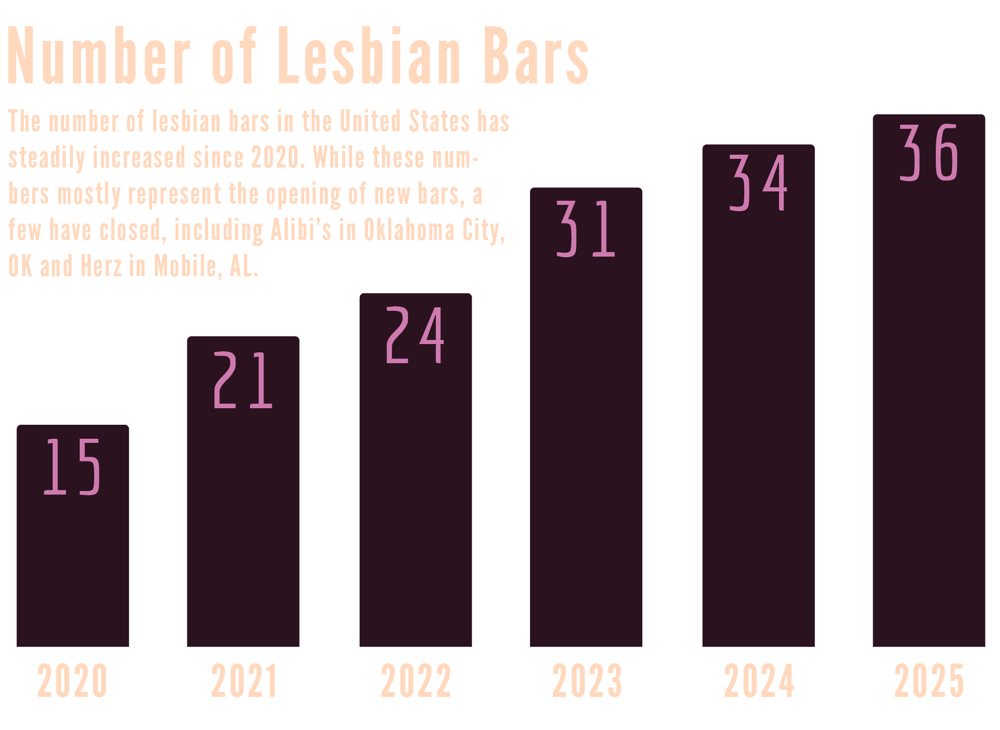
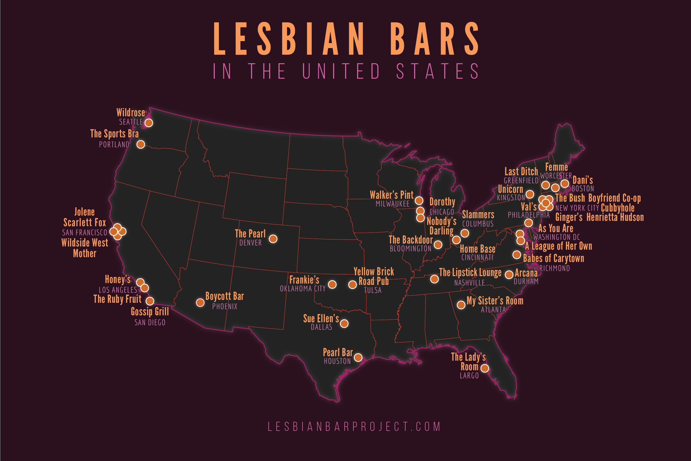

In 2020, only 15 lesbian bars remained in the United States. The number of bars had been rapidly declining, and in March of 2020, with the onset of the COVID-19 pandemic, the few remaining bars were at risk of closure.
Keep scrolling to read more about lesbian bars, or click through the map to experience their decline over the 2010s.
With the aim to "celebrate, support, and preserve" the 15 lesbian bars that remained in the United States, the Lesbian Bar Project began as a grassroots fundraising effort. Between October 28 and November 25, 2020, the project raised $117,504.50.
The Lesbian Bar project rapidly gained public attention, including the support of celebrities such as Lea DeLaria.
A core tenant of the project is not only to preserve the bars, but to allow them to thrive in the future. The project's website includes information on each remaining bar, as well as links to those bar's websites.
LGBT+ bars are places of debate. While they have a long history as one of the only gathering spaces for LGBTQ+ people, they have also faced criticism as spaces that exclude people under the age of 21, those who prefer not to drink alcohol, and certain members of the LGBTQ+ community.
Regardless of one's opinion on the importance of LGBTQ+ bars in the modern age, many will agree that these bars played an important role in the history of the LGBT+ community. Organizations such as The Lesbian Herstory Archives and The GLBT Historical Society document this history.
In addition to real photos and diaries, historical fiction books such as Last Night at the Telegraph Club by Malinda Lo document how lesbian bars were some of the very few places that young queer people could find community. Particularly striking to the modern reader, the characters, who live in San Francisco in 1954, have more options for lesbian bars to frequent than were available to a resident of San Francisco in 2020.
Although lesbian bars have been in rapid decline, there is reason to be hopeful. Though bars themselves may eventually become a thing of the past, increasing acceptance of LGBTQ+ idenities has allowed LGBTQ+ youth to find community in other places, both online, and more openly in public.
Additionally, the closure of certain exclusionary lesbian bars is not necessarily negative. Unfortunately, some lesbian and gay spaces have a history of being transphobic and exclude transgender people. Some of these "trans exclusionary radical feminists" (TERFs) owned and operated lesbian bars which have now closed. Similarly, other bars closed to due racism and other forms of discrimination. The closure of lesbian bars because they are not inclusive of all lesbians and queer women is celebrated by many as a net positive for the community.
This article was originally published in the beginning of 2021, just as The Lesbian Bar Project was beginning, and just as the pandemic was hitting lesbian bars the hardest. Since 2021, the revitalization of lesbian bars has been an overwhelming success. The number of lesbian bars more than doubled, from 15 at the end of 2020 to 36 as of June 2026. While a small number of bars have closed since 2021 (primarily in southern states, which unfortunately is where these spaces are needed the most), many new bars have opened.

Many of these new bars center diversity within the queer community. Some of these modern bars are owned and operated by lesbians of color and transgender or nonbinary lesbians. Additionally, Harold's Haunt, a bar in Pittsburgh, Pennsylvania, is a new bar that operates as a "they bar", building on the idea of gay and lesbian bars, but centering transgender people.
In seeking to be more inclusive of those who do not drink alcohol, some of these newer bars offer alternate options. Mocktails are becoming increasingly popular at many bars. Others, like As You Are in Washington, D.C. also operates as a cafe and community space during the day time, offering a gathering space for queer women outside of an alcohol-focused setting.
2026 is a very different time to be a queer person in the United States than 2021. There are nationwide threats to transgender healthcare (particularly for youth) and concerns about threats to marriage equality. These threats are even greater for many queer and trans people of color. However, coming together as a community, especially in LGBTQ+ focused spaces, is the best way to survive threats to queer existence. The resurgence of lesbian bars, especially those which center diversity, demonstrates that despite threats, community spaces are needed now more than ever.
The map below shares the location of all current lesbian bars in the United States, as of June 2026. The map is designed to be printed as a poster, allowing anyone to check off the bars they have visited.

All data in this map comes from a project by Lost Womyn's Spaces, a blog that documents the closure of modern and historical gathering spaces for LGBT+ women. The author of this article notes that "womyn" spelled with a "y" is sometimes useds by TERFs to exclude trans women from the definition of women. The author is themself a nonbinary, transmasculine queer person and does not condone TERF ideology. The author appreciates the work this blog has done to collect information about historical lesbian bars, but does not endose any other content on the blog.
Additionally, historical data about queer communities is often community-sourced and may not be fully accurate or complete. Large institutions have not always cared about LGBTQ+ lives and histories, meaning data about these communities was not always recorded. Still, it is important to tell these stories with community-sourced data.